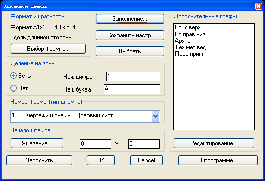
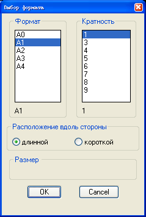
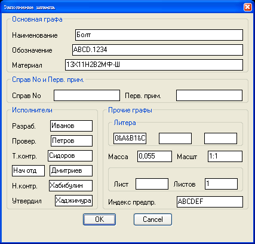
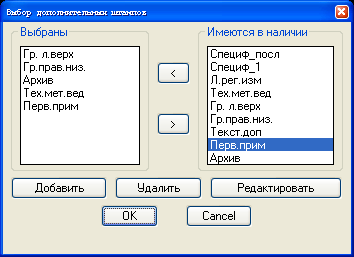
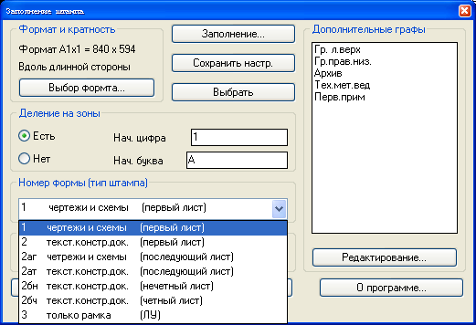
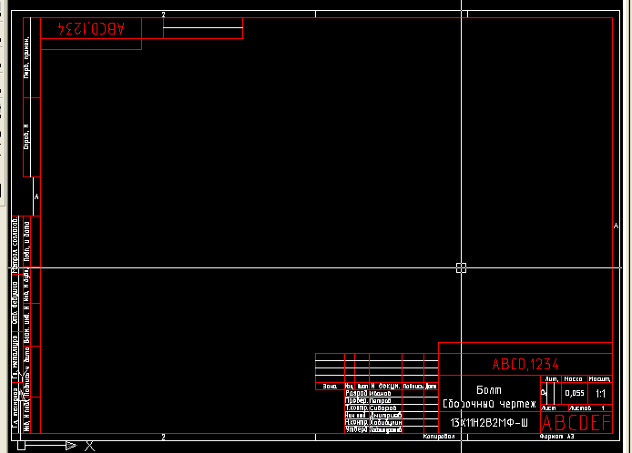

FORMAT
Выполняет отрисовку чертежных штампов
На рисунке 1 представлено главное диалоговое окно программы.

Рисунок 1 - главное окно диалога программы.
Кнопки главного окна:
- "Выбор формата..."; - вызывает диалог выбора формата (см. Рисунок 2);
- "Заполнение ..." - вызывает диалог заполнения текстовых полей чертежного штампа (см. Рисунок 3.);
- "Сохранить настр." - выполняет сохранение в системном реестре выбранных настроек (за исключением) дополнительных граф;
- "Выбрать" - позволяет выбрать чертежный штамп для его последующего редактирования. Данные из чертежного штампа копируются в поля диалога;
- "Указание ..." - позволяет задать в графическом редакторе левый нижний угол отрисовываемого чертежного штампа;
- "Заполнить" - позволяет выбрать в графическом редакторе чертежный штамп, который будет заполнен данными из текущего диалога;
- "Редактирование..." - вызывает диалог выбора дополнительных граф чертежного штампа (см. Рисунок 4);
- "OK" - производит создание штампа в графическом редакторе.
Примечание:
Штамп генерируется как непоименованный блок. Изменяемые текстовые поля в штампе формируются в виде атрибутов. После выполнения генерации штампа их можно отредактировать стандартными средствами.

Рисунок 2 - выбор формата.

Рисунок 3 - заполнение штампа.

Рисунок 4 - выбор дополнительных граф штампа.

Рисунок 5 - выбор типа формы штампа.

Рисунок 6 - результат работы программы.
К оглавлению....